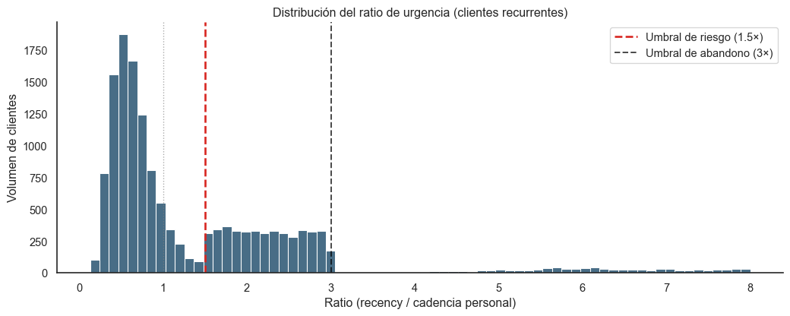

Código
import pandas as pd
import numpy as np
import matplotlib.pyplot as plt
import seaborn as sns
sns.set_theme(style="white")
COLOR_PRIMARY = "#0B3C5D"
COLOR_WARN = "#D82822"
np.random.seed(42)
n_recurrentes = 15310 # 18638 - 3328 single-buyers
# Distribución mixta: la mayoría < 1, una cola larga > 1.5
n_normales = int(n_recurrentes * 0.62)
n_riesgo = int(n_recurrentes * 0.28)
n_abandono = n_recurrentes - n_normales - n_riesgo
ratios_normales = np.random.lognormal(mean=-0.5, sigma=0.4, size=n_normales)
ratios_riesgo = np.random.uniform(1.5, 3.0, size=n_riesgo)
ratios_abandono = np.random.lognormal(mean=1.5, sigma=0.6, size=n_abandono) + 3.0
ratios = np.concatenate([ratios_normales, ratios_riesgo, ratios_abandono])
ratios_visual = ratios[ratios < 8]
plt.figure(figsize=(11, 4.5))
sns.histplot(ratios_visual, bins=70, color=COLOR_PRIMARY, edgecolor="white")
plt.axvline(x=1.0, color='gray', linestyle=':', linewidth=1, alpha=0.7)
plt.axvline(x=1.5, color=COLOR_WARN, linestyle='--', linewidth=2,
label="Umbral de riesgo (1.5×)")
plt.axvline(x=3.0, color='black', linestyle='--', linewidth=1.5, alpha=0.7,
label="Umbral de abandono (3×)")
plt.title("Distribución del ratio de urgencia (clientes recurrentes)")
plt.xlabel("Ratio (recency / cadencia personal)")
plt.ylabel("Volumen de clientes")
plt.legend()
sns.despine()
plt.tight_layout()
plt.show()